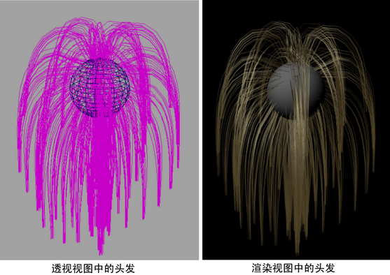

以下是创建 nHair 并设置其动画的常规工作流：
- 在模型上创建头发
- 对头发曲线设置样式
- 修改头发和 nucleus 节点属性
- 设置头发着色/阴影
- 渲染场景
初始工作流可以是：
- 创建一个球体并将其转化为被动碰撞对象（）。
- 创建 nHair。头发伸出法线到曲面。
- 播放模拟。头发在 Nucleus 动力的作用下向下垂落。
- 头发松散后，选择头发曲线，从“当前位置”(Current Position)设定“开始位置”(Start Position)。（。
- 根据需要为球体设置动画，以查看自然运动或在交互式播放期间移动该球体（）。
- 渲染场景。
